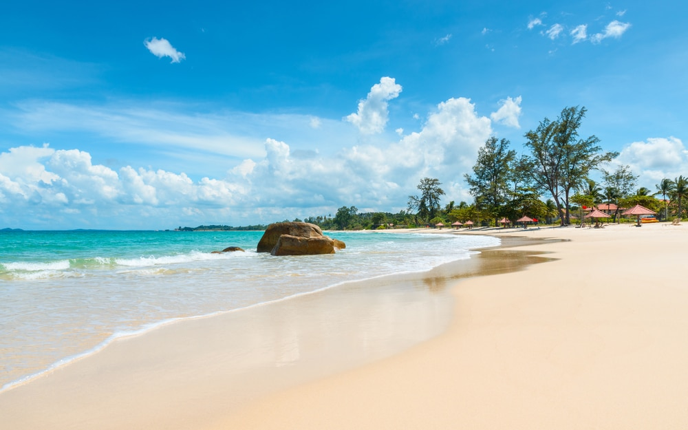
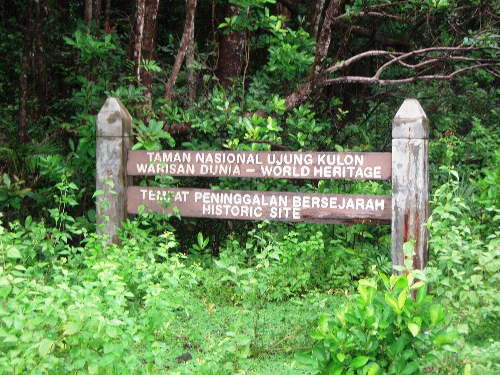

Selamat Datang di Website Wisata Banten
Provinsi Banten merupakan salah satu destinasi wisata favorit di Indonesia yang menawarkan keindahan alam, kekayaan budaya, serta sejarah yang menarik. Terletak di ujung barat Pulau Jawa, Banten memiliki berbagai pilihan tempat wisata yang cocok untuk liburan keluarga, petualangan alam, maupun wisata religi.
Salah satu ikon wisata paling terkenal adalah Pantai Anyer yang memiliki pasir putih dan pemandangan matahari terbenam yang indah. Selain itu, terdapat juga Taman Nasional Ujung Kulon, kawasan Suku Baduy, hingga wisata religi Masjid Agung Banten.
Rekomendasi Wisata Populer
- Pantai Anyer
- Taman Nasional Ujung Kulon
- Suku Baduy
- Tanjung Lesung
- Pantai Sawarna
- Gunung Salak
- Pantai Karang Bolong
- Pulau Peucang
- Masjid Agung Banten
- Pantai Carita
Destinasi Wisata Populer



Berita Wisata Terkini
Lihat Semua →Pantai Anyer Ramai Saat Libur Panjang
Wisatawan dari berbagai daerah memadati Pantai Anyer untuk menikmati sunset...
Baca SelengkapnyaUjung Kulon Jadi Destinasi Favorit 2026
Taman Nasional Ujung Kulon semakin populer sebagai wisata alam dan konservasi...
Baca Selengkapnya